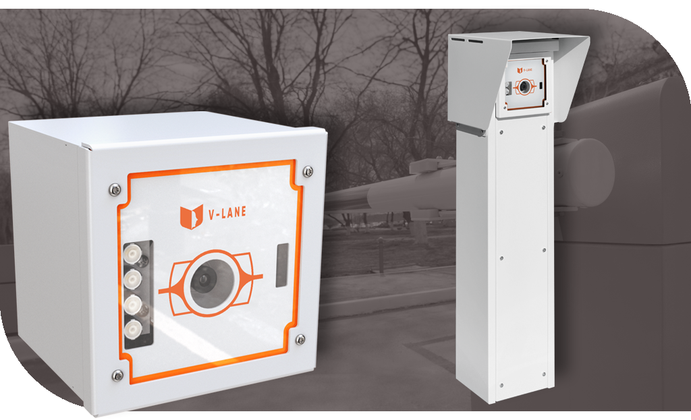
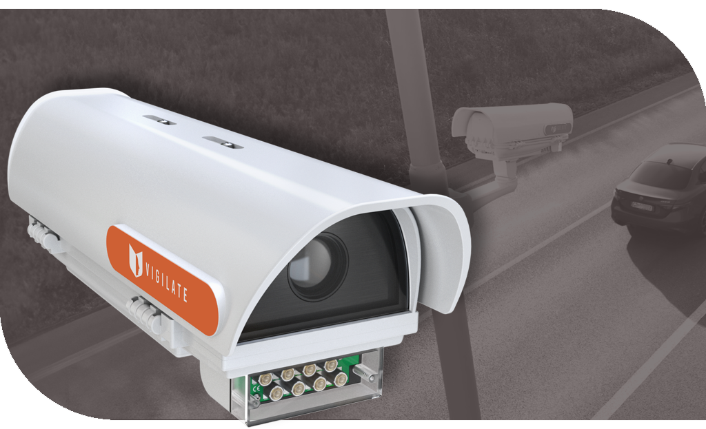
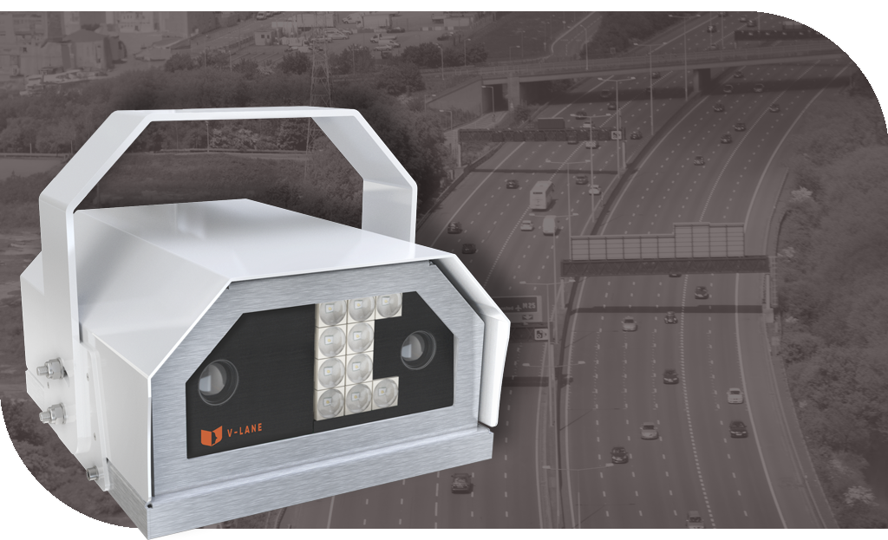
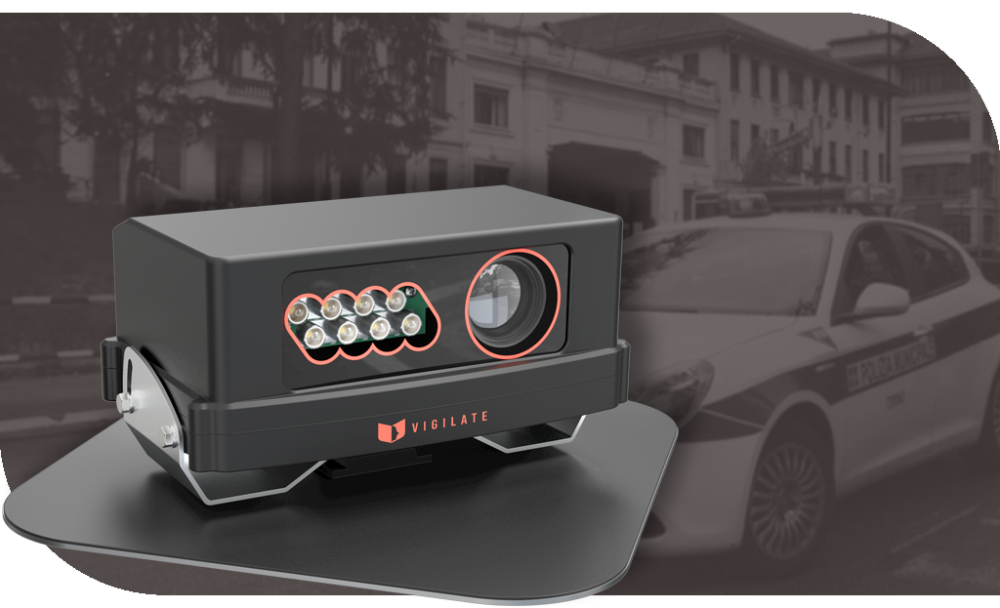

V-LANE TYPE A
Una sofisticata telecamera di tipo CCV, progettata per offrire un livello di sorveglianza senza precedenti.
Questa eccezionale soluzione è in grado di monitorare con precisione fino a cinque corsie stradali, con una copertura che si estende fino a 50 metri di distanza.
Tuttavia, la sua versatilità va ben oltre le caratteristiche di base.
La nostra telecamera rappresenta un punto di riferimento nell'industria della sorveglianza, poiché può essere personalizzata su misura per
soddisfare le esigenze specifiche di ciascun cliente. Ogni aspetto, dall'hardware all'ottica installata, è completamente modificabile,
garantendo una soluzione perfettamente adattata ai contesti più complessi e alle situazioni più variegate.
Quindi, se cercate una telecamera che non solo offre un'ampia copertura di sorveglianza, ma che può essere adattata per aderire
perfettamente alle vostre esigenze, la nostra soluzione è la scelta ideale. Rivoluzionando il concetto di telecamera di sorveglianza,
offriamo una tecnologia che si adatta a voi, in modo da poter ottenere la massima efficacia e sicurezza in ogni situazione.

V-LANE TYPE B
La nostra telecamera progettata su misura per le superstrade. Questo avanzato dispositivo è stato sviluppato per offrire una precisione eccezionale
nell'acquisizione di dati, compresi modelli, colori, numeri di targhe e tipi di veicoli, persino a velocità variabili. Tuttavia, la sua caratteristica distintiva
va oltre la capacità di rilevare dettagli fondamentali. Questo straordinario dispositivo è studiato per l'ambiente impegnativo delle superstrade, dove la precisione
e l'affidabilità sono fondamentali. La telecamera è
in grado di catturare con precisione le informazioni chiave anche in condizioni di traffico intenso e flussi veicolari ad alta velocità. Questa capacità di
adattamento è un elemento cruciale per garantire la sicurezza e la gestione efficace delle superstrade moderne.
Ma la vera rivoluzione sta nella sua caratteristica principale: la connettività wireless. Oltre a poter essere collegata tramite cablaggio tradizionale, la
nostra telecamera è in grado di stabilire una connessione wireless affidabile.

V-COUNTER MANAGER INDOOR
Un apparato avanzato, che unisce l'efficienza di telecamere di ultima generazione a un motore di elaborazione intelligente, noto come "v-engine".
Questo sistema rappresenta un balzo in avanti nell'ambito della sicurezza, adattabile sia per edifici di dimensioni contenute che per strutture di grande complessità.
Oltre alla potenza di monitoraggio, il sistema si distingue per la capacità di analisi avanzata, caratterizzata dalla riconoscibilità di forme e oggetti tridimensionali.
La versatilità di questo sistema è veramente notevole. Che si tratti di edifici di piccole dimensioni o di strutture più ampie, l'apparato è in grado di
adattarsi perfettamente alle diverse esigenze. Le telecamere all'interno del sistema non solo catturano dettagli in modo preciso, ma il cuore di questa tecnologia,
il "v-engine", consente di gestire e sincronizzare le informazioni rilevate. Questa elaborazione intelligente è fondamentale per la creazione di una sorveglianza fluida
e integrata. Un punto di forza fondamentale è la capacità di riconoscimento tridimensionale, una caratteristica che va ben oltre il semplice riconoscimento di immagini.

V-COUNTER MANAGER OUTDOOR
Un altro apparato di sorveglianza che sfrutta il potenziale di più telecamere avanzate, unite e orchestrate dal sofisticato motore di elaborazione, il "v-engine".
Questo sistema rappresenta un ulteriore passo avanti nel garantire una sorveglianza senza compromessi, adattabile a varie situazioni e ambienti. Al cuore di
questa soluzione vi sono le telecamere extra aziendali di Samsung, esperte nell'affrontare le sfide dell'ambiente esterno. Queste telecamere sono state progettate
per resistere alle intemperie, alle precipitazioni e agli elementi avversi, garantendo una performance affidabile in ogni condizione meteorologica. Questa robustezza
è fondamentale quando si tratta di proteggere edifici, aree e spazi all'aperto. Oltre alla loro resistenza, queste telecamere rappresentano una combinazione di
potenza e precisione. Dotate della capacità di eseguire riconoscimenti tridimensionali, possono cogliere e analizzare i dettagli in modo accurato, fornendo una visione
più completa e comprensiva dell'ambiente sorvegliato. La risoluzione migliorata in particolare per il riconoscimento di individui è un elemento chiave, garantendo che
ogni dettaglio sia catturato in modo nitido e definito.
COSA FANNO I NOSTRI DIPENDENTI DIPENDENTI?
( parte svolta da me in quanto stagista )
Nel cuore dei nostri laboratori, una squadra di talentuosi dipendenti si dedica con zelo e competenza all'assemblaggio di prodotti di altissima qualità.
Questo processo avviene con una cura meticolosa, poiché comprendiamo l'importanza di offrire soluzioni che siano perfettamente allineate con le esigenze specifiche dei
nostri clienti. Ogni passo, ogni dettaglio è attentamente considerato e implementato, garantendo che ogni prodotto che esce dalle nostre linee di produzione sia
un'eccellenza in termini di funzionalità e personalizzazione.
Ma il nostro impegno non si ferma qui. Una volta assemblati, i prodotti vengono sottoposti a un rigoroso processo di test sia fisico che digitale. Questo approccio
olistico alla verifica dell'integrità del prodotto garantisce che ogni funzione, ogni caratteristica sia ottimamente calibrata e pronta per rispondere alle sfide
reali che i nostri clienti incontreranno. Dalle analisi dei dati ai test pratici, ogni fase di test è finalizzata a garantire una performance impeccabile e affidabile.
La nostra attenzione alla qualità si estende anche alla gestione degli imballaggi e delle spedizioni. Riconosciamo che un prodotto di alta qualità merita di essere
presentato al cliente in modo impeccabile. I nostri dipendenti si dedicano con impegno a impacchettare ogni articolo con la massima cura, assicurandosi che sia protetto
in modo adeguato per affrontare il viaggio verso il cliente finale. Ciò riflette il nostro impegno per la soddisfazione del cliente, garantendo che ogni prodotto
arrivi nelle migliori condizioni possibili.
In sintesi, il nostro processo di produzione è intriso di attenzione, cura e dedizione. I nostri laboratori sono il punto in cui l'artigianalità e la tecnologia si
fondono per creare soluzioni che superano le aspettative. Dall'assemblaggio alla personalizzazione, dai test alla gestione degli imballaggi, ogni fase del nostro
processo è guidata dalla passione per l'eccellenza e la consegna di prodotti che possano davvero fare la differenza nella vita dei nostri clienti.


{kind=link}